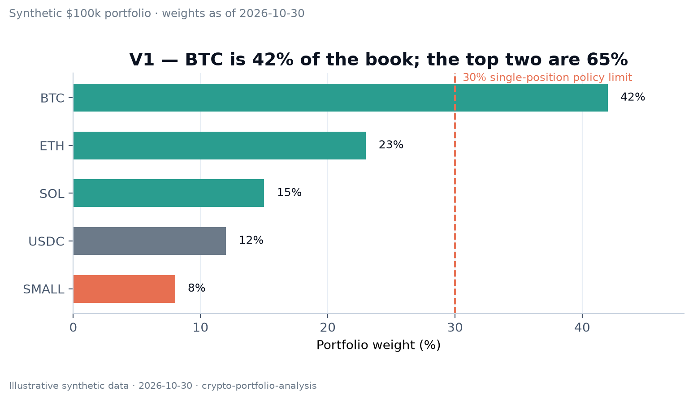
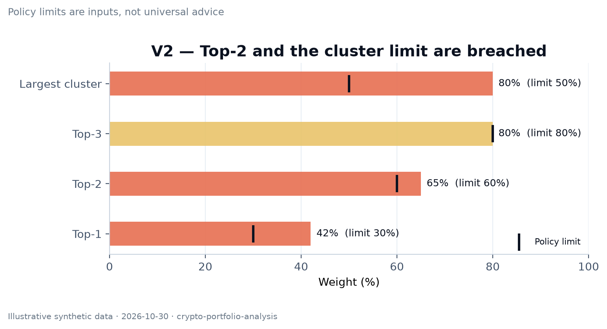
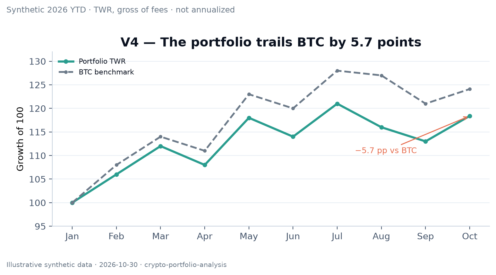
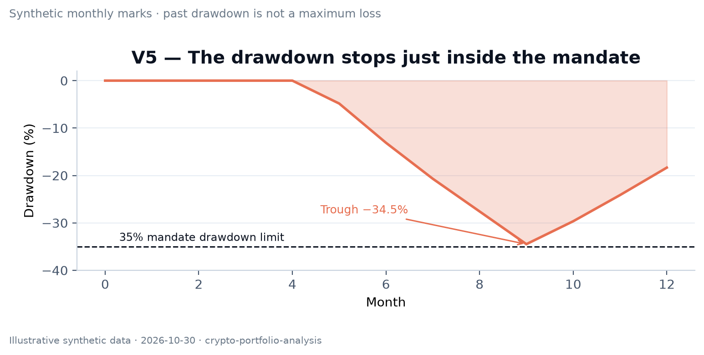
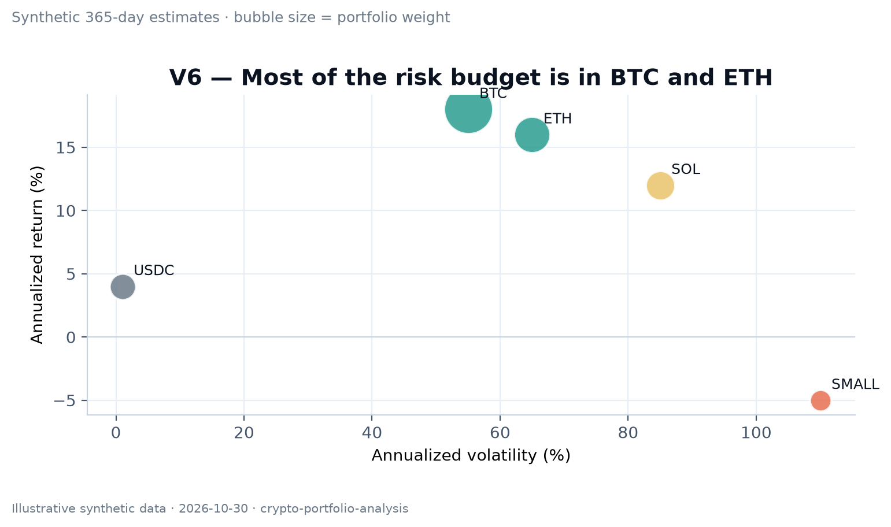
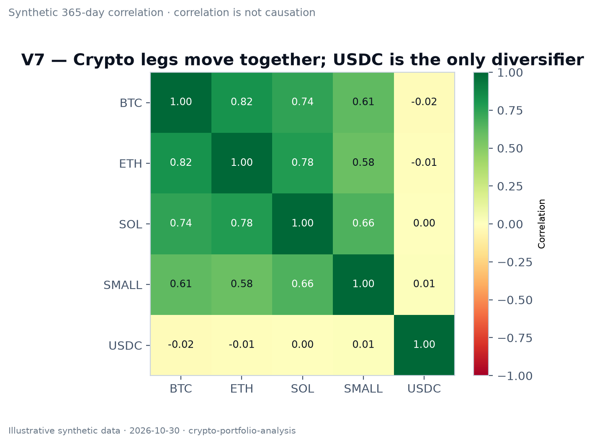
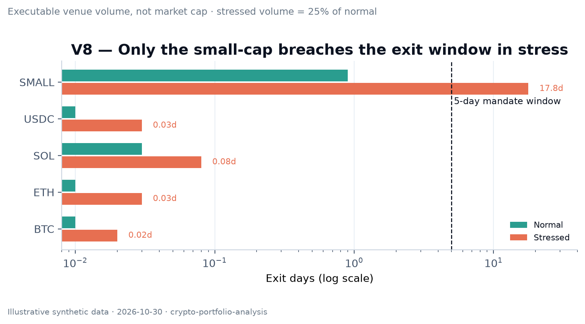
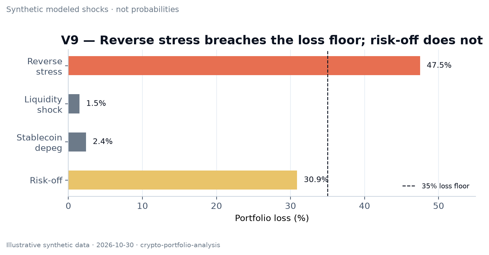

As of: 2026-10-30 14:00 UTC
Base currency: USD
Data coverage: 92% (four live positions; small-cap price six hours old)
Benchmark: BTC
Mode: Full Review
Synthetic example. No real wallet, person, or investment recommendation.
| Item | Detail |
|---|---|
| Purpose | Growth over three years |
| Return objective | Long-term growth with BTC-like risk, not maximum yield |
| Risk tolerance | Maximum 35% drawdown |
| Liquidity | $20,000 within 12 months |
| Constraints | 30% single-position cap; no leverage |
| Review | Quarterly; monthly risk check |
| Position | Value | Weight | Source/time | Evidence |
|---|---|---|---|---|
| BTC | $42,000 | 42.0% | Two venues, 14:00 UTC | VERIFIED |
| ETH | $23,000 | 23.0% | Two venues, 14:00 UTC | VERIFIED |
| SOL | $15,000 | 15.0% | Venue + aggregator | VERIFIED |
| USDC | $12,000 | 12.0% | Issuer + market | VERIFIED |
| SMALL | $8,000 | 8.0% | One DEX, 08:00 UTC | ESTIMATED |
| Total | $100,000 | 100% | — | — |
Top-1 / Top-2 / Top-3: 42.0% / 65.0% / 80.0%
HHI: 0.2726; effective positions: 3.67
Cluster map: BTC 42%, ETH 23%, SOL 15%, stablecoin 12%, small-cap 8%.


| Measure | Value | Window | Benchmark | Evidence |
|---|---|---|---|---|
| TWR | +18.4% | 2026-01-01 to 2026-10-30 | BTC +24.1% | VERIFIED |
| MWR | +16.9% | Same | — | ESTIMATED |
| Contribution | BTC +9.8; ETH +5.1; SOL +4.2; other −0.7 | Same | — | ESTIMATED |
The portfolio trails BTC by 5.7 points. With no cost basis, this is a value-change analysis, not P&L.


| Measure | Value | Window | Method | Limit |
|---|---|---|---|---|
| Volatility | 58% | 365d | Historical | 50% |
| Max drawdown | −34% | 2 years | Daily marks | −35% |
| VaR 95% 1d | 4.8% | 365d | Historical | 4.0% |
| CVaR 95% 1d | 7.1% | 365d | Historical | 6.0% |
| Beta vs BTC | 1.12 | 365d | OLS | 1.20 |
| Top risk contribution | BTC 46% | 365d | Component CVaR | — |
VaR is not a maximum loss. The portfolio is close to its drawdown limit and above its volatility and CVaR limits.


| Position | Value | Daily executable volume | 5% exit days | Stressed exit days | Gate |
|---|---|---|---|---|---|
| BTC | $42,000 | $8.0B | 0.01 | 0.01 | None |
| ETH | $23,000 | $4.0B | 0.01 | 0.01 | None |
| SOL | $15,000 | $600M | 0.01 | 0.03 | None |
| USDC | $12,000 | $2.0B | 0.01 | 0.01 | Issuer redemption |
| SMALL | $8,000 | $180,000 | 0.9 | 17.8 | None |
The small-cap is not a liquidity problem at 8% of this portfolio, but it is the first position that cannot be exited quickly in stress.

Reserve asset; deep liquidity; no cash flow. Main risks: regulation, custody, beta.
Smart-contract infrastructure; staking yield and burn; validator/MEV and L2 value migration risks.
High-performance L1; staking and network usage; outage history, validator concentration, competition.
Liquidity buffer, not cash. Issuer, reserve, and redemption-gate risk. A 12% weight is a policy choice, not a risk-free allocation.
Low float, one DEX price, no independent second source. Tokenomics and unlock schedule need verification. Treat the position as ESTIMATED, not verified.
No lending or LP positions in this example. Recent BTC/ETH exchange outflows are mildly negative; this is context, not a thesis. Entity labels are probabilistic.
| Scenario | Shocks | Portfolio loss | Worst position | First breach |
|---|---|---|---|---|
| Risk-off | BTC −30%, ETH −40%, SOL −50%, SMALL −70% | $30,900 / 30.9% | SMALL | Near drawdown limit |
| Stablecoin depeg | USDC −20% | $2,400 / 2.4% | USDC | Liquidity gate |
| Liquidity shock | Small-cap volume −75% | 17.8 exit days | SMALL | Not the 12-month need |
| Reverse stress | BTC −45%, ETH −55%, SOL −65%, SMALL −85% | $47,500 / 47.5% | SMALL | 35% drawdown breach |

| Alternative | Risk | Liquidity | Concentration | Cost/tax | What would make it wrong? |
|---|---|---|---|---|---|
| Current | High beta | Good except small-cap | Top-2 65% | Low | BTC rally continues |
| Risk-reduced | Lower beta | Better | Top-2 55% | Medium | Bull market missed |
| Diversified-within-thesis | Similar beta | Medium | Top-2 50% | Medium | Correlations rise |
Bands: ±5 percentage points; ±3 for the small-cap.
Tax note: Cost basis missing; tax impact not assessable.
This appendix is part of the worked example. It shows the checks a reviewer should expect before accepting a full review, not a claim that the synthetic inputs are live.
| Check | Result in this example |
|---|---|
| Mandate captured before the verdict | IPS-lite table on page 2: growth, three-year horizon, 35% drawdown limit, $20k liquidity need, 30% single-position cap. |
| Data coverage stated | 92%; the small-cap price is six hours old and has one venue. It is marked ESTIMATED. |
| Evidence classes | Every table uses VERIFIED, REPORTED, ESTIMATED, MODELED or UNVERIFIED; no material number is silently filled. |
| Concentration and clusters | Top-1 42%, top-2 65%, top-3 80%; major-crypto cluster 80%, so the ticker count overstates diversification. |
| Risk budget | Volatility 58%, max drawdown −34%, VaR(95) 4.8%, CVaR(95) 7.1%, beta 1.12; volatility and CVaR exceed the illustrative limits. |
| Liquidity and exit | Large caps exit in under 0.1 day at 5% participation; the small-cap takes 0.9 day normally and 17.8 days in stress. |
| Scenarios and reverse stress | Risk-off −30.9%, stablecoin depeg −2.4%, reverse stress −47.5%; the reverse path breaches the 35% loss floor. |
| Decision record | Review the small-cap; enforce the 30% single-position cap; classify USDC as counterparty-bearing liquidity; state falsifiers and a review date. |
| Visual QA | Eight charts; one finding per chart; source/date, unit, and limitation on every figure; bars start at zero; no 3D, pie, or unlabeled dual axis. |
| Read-only boundary | No wallet, key, signature, approval, bridge, deposit, or order; no transaction was executed. |